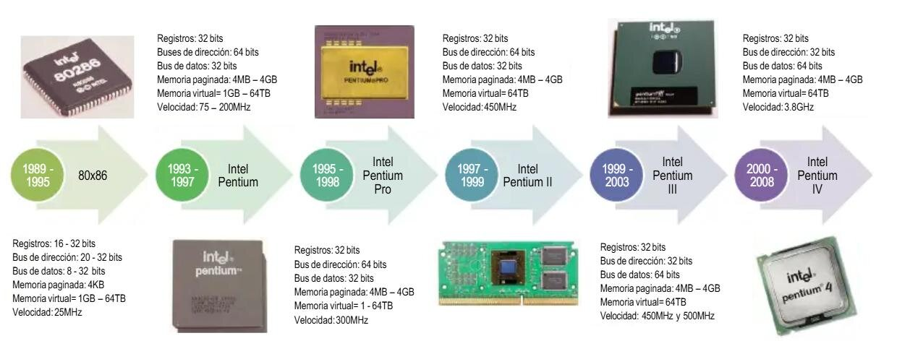
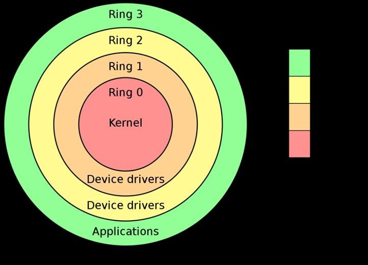
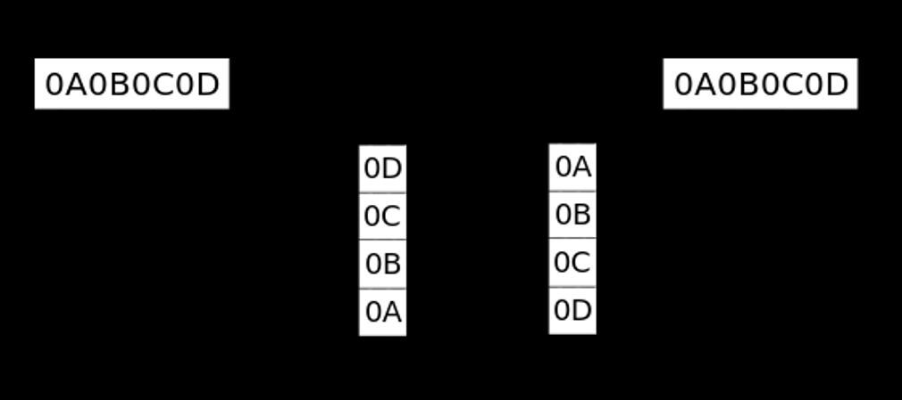

Arquitectura de procesadores x86
Antes de poder leer el código de una muestra de malware a bajo nivel hace falta entender la máquina sobre la que se ejecuta. Este módulo abre el bloque de conceptos teóricos con la arquitectura x86: cómo ha evolucionado la familia de procesadores, qué son los registros y cómo han ido creciendo, qué son los anillos de privilegio, cómo se ordenan los bytes en memoria (endianness) y cómo direcciona memoria un procesador con segmentación.
1 Evolución de los procesadores x86
x86 es el nombre genérico de una familia de arquitecturas de procesador iniciada por Intel con el 8086 (1978) y continuada durante décadas manteniendo compatibilidad retroactiva: un programa escrito para un procesador antiguo, en general, sigue funcionando en uno moderno. Esa continuidad es la razón por la que entender la arquitectura x86 clásica sigue siendo imprescindible para analizar malware actual, incluso en equipos de 64 bits.

A lo largo de esta evolución se distinguen tres grandes generaciones, cada una definida por la anchura de sus registros y de sus buses de direcciones y de datos:
- x86 (16 bits): la generación original, inaugurada por el 8086 y consolidada por el 80286. Registros de 16 bits y memoria direccionable limitada.
- x86-32 o IA-32 (32 bits): a partir del 80386, los registros se amplían a 32 bits, lo que multiplica enormemente la memoria direccionable y sienta las bases de Windows e otros sistemas operativos modernos durante más de dos décadas.
- x86-64 o AMD64 (64 bits): la extensión a 64 bits, introducida por AMD y adoptada después por Intel, con registros de 64 bits y capacidad de direccionamiento de memoria muchísimo mayor.
2 Registros del procesador
Un registro es una pequeña zona de memoria integrada en el propio procesador, de acceso muchísimo más rápido que la memoria RAM, que se usa para almacenar temporalmente los datos y direcciones con los que trabaja la CPU en cada instrucción.
Registros del 8086 (16 bits)
El 8086 definió el conjunto de registros que la familia x86 ha ido ampliando desde entonces:
| Registro | Nombre / uso |
|---|---|
| AX, BX, CX, DX | Registros de propósito general (acumulador, base, contador, datos) |
| CS, DS, ES, SS | Registros de segmento (código, datos, extra, pila) |
| IP | Instruction Pointer: dirección de la siguiente instrucción a ejecutar |
| SP, BP | Stack Pointer y Base Pointer: gestión de la pila |
| SI, DI | Source Index y Destination Index: usados en operaciones con cadenas |
| FLAGS | Registro de estado: indicadores como acarreo, cero o signo tras cada operación |
Cómo crecen los registros: de AX a EAX y a RAX
Cada salto de generación no elimina los registros anteriores: los extiende. El registro de 16 bits sigue existiendo como la mitad baja del registro de 32 bits, que a su vez sigue existiendo como la mitad baja del registro de 64 bits. Por eso, en un mismo procesador x86-64, pueden convivir AX, EAX y RAX como distintas "vistas" del mismo espacio físico:
El mismo patrón de prefijos se aplica a los demás registros de propósito general: BX/EBX/RBX, CX/ECX/RCX, DX/EDX/RDX, y también a SI/ESI/RSI, DI/EDI/RDI, SP/ESP/RSP y BP/EBP/RBP. La arquitectura x86-64 añade además ocho registros de propósito general nuevos, numerados R8 a R15, sin equivalente en las generaciones de 16 y 32 bits.
3 Anillos de privilegio
Para proteger el sistema, la arquitectura x86 define distintos niveles de privilegio o anillos (rings), que determinan qué instrucciones y qué recursos puede utilizar el código que se ejecuta en cada nivel. Cuanto más bajo es el número del anillo, mayor es el privilegio.

- Ring 0 (kernel): el nivel de mayor privilegio, reservado al núcleo del sistema operativo. Tiene acceso completo al hardware y a toda la memoria.
- Ring 1 y Ring 2: niveles intermedios, usados históricamente por controladores de dispositivos (drivers) y servicios del sistema; en la práctica, la mayoría de los sistemas operativos modernos apenas los utiliza.
- Ring 3 (usuario): el nivel de menor privilegio, donde se ejecutan las aplicaciones normales. El código en Ring 3 no puede acceder directamente al hardware ni a la memoria de otros procesos: debe solicitarlo al núcleo mediante llamadas al sistema.
4 Endianness: el orden de los bytes
Cuando un valor ocupa más de un byte en memoria (por ejemplo, un entero de 4 bytes), el procesador debe decidir en qué orden los almacena. A esa convención se la llama endianness, y existen dos variantes:

Ejemplo: el valor 0x12345678 almacenado en cada convención.
x86 es little-endian: este detalle, aparentemente menor, es una fuente constante de confusión al leer volcados hexadecimales de memoria o de ficheros durante un análisis, porque los bytes aparecen "al revés" respecto al valor que representan. Reconocer esta convención es imprescindible para interpretar correctamente cabeceras de ficheros, direcciones o constantes que aparecen en un editor hexadecimal.
5 Direccionamiento de memoria segmentada
En los procesadores x86 clásicos, la memoria no se direcciona con un único número: se combina un segmento con un desplazamiento (offset) dentro de ese segmento, siguiendo la notación SEGMENTO:DESPLAZAMIENTO.
- Segmento: identifica el bloque de memoria en el que se trabaja (código, datos, pila...), y se apoya en los registros de segmento CS, DS, ES y SS vistos antes.
- Desplazamiento: la distancia, en bytes, desde el inicio de ese segmento hasta la posición concreta a la que se quiere acceder.
Esta forma de direccionamiento permite que un mismo programa pueda reubicarse en distintas zonas de memoria física simplemente cambiando el valor del segmento, sin tener que reescribir todas las direcciones internas. Aunque los sistemas operativos modernos de 32 y 64 bits usan sobre todo memoria virtual plana (flat memory model) en lugar de segmentación explícita, los registros de segmento y la notación segmento:desplazamiento siguen apareciendo en desensambladores y depuradores, y son la base histórica que explica por qué la memoria de un proceso se organiza en regiones separadas.